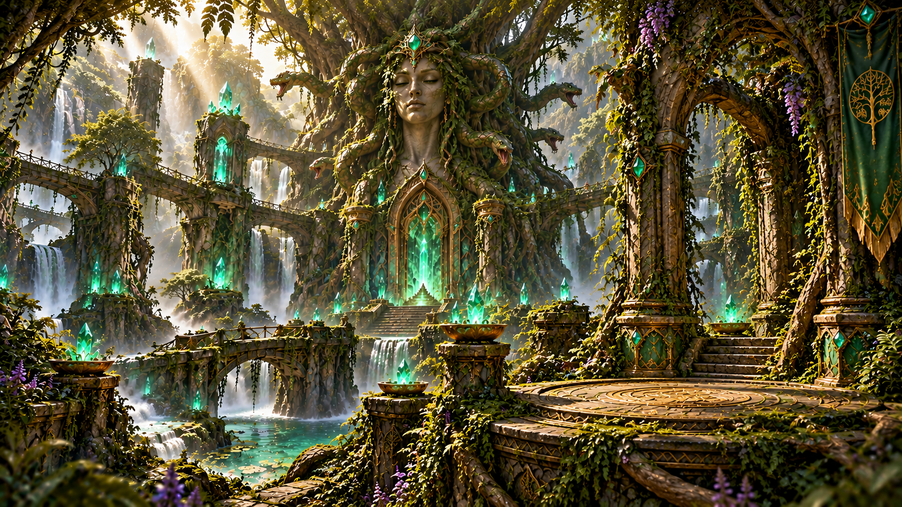
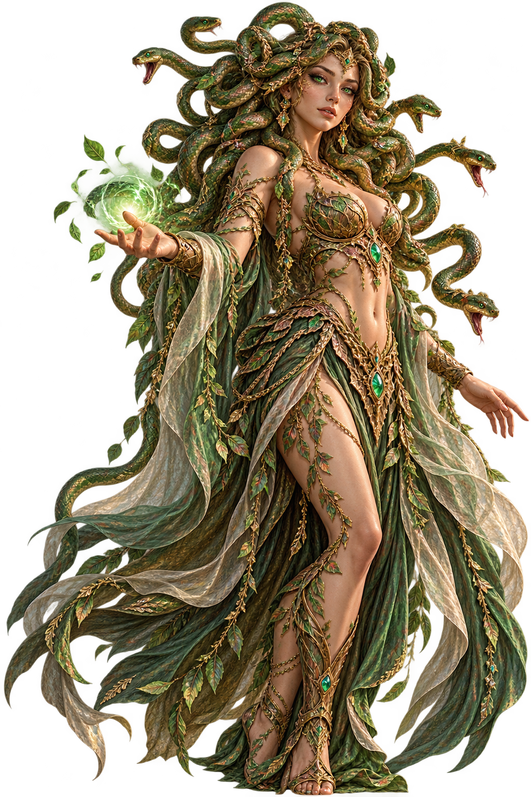
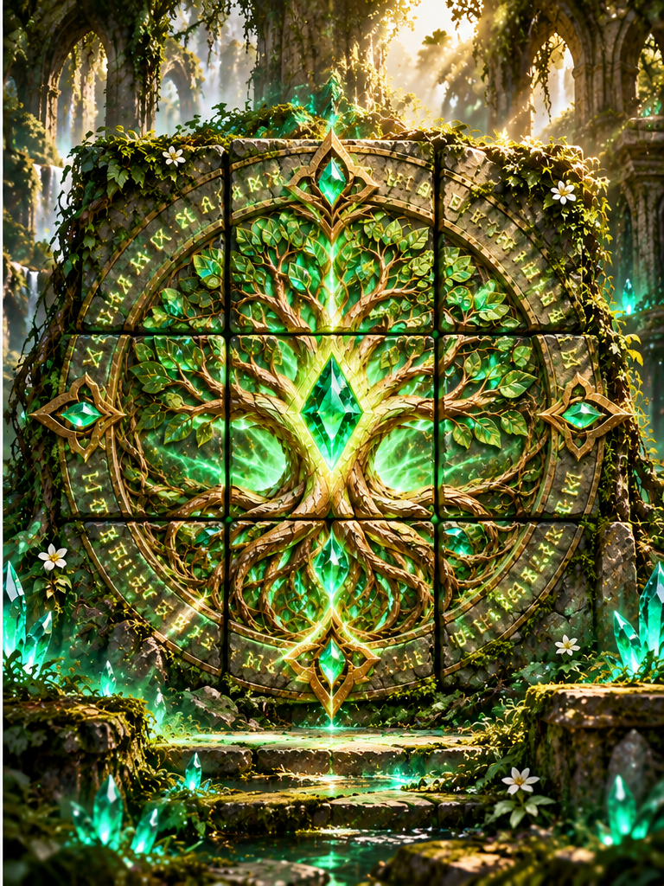
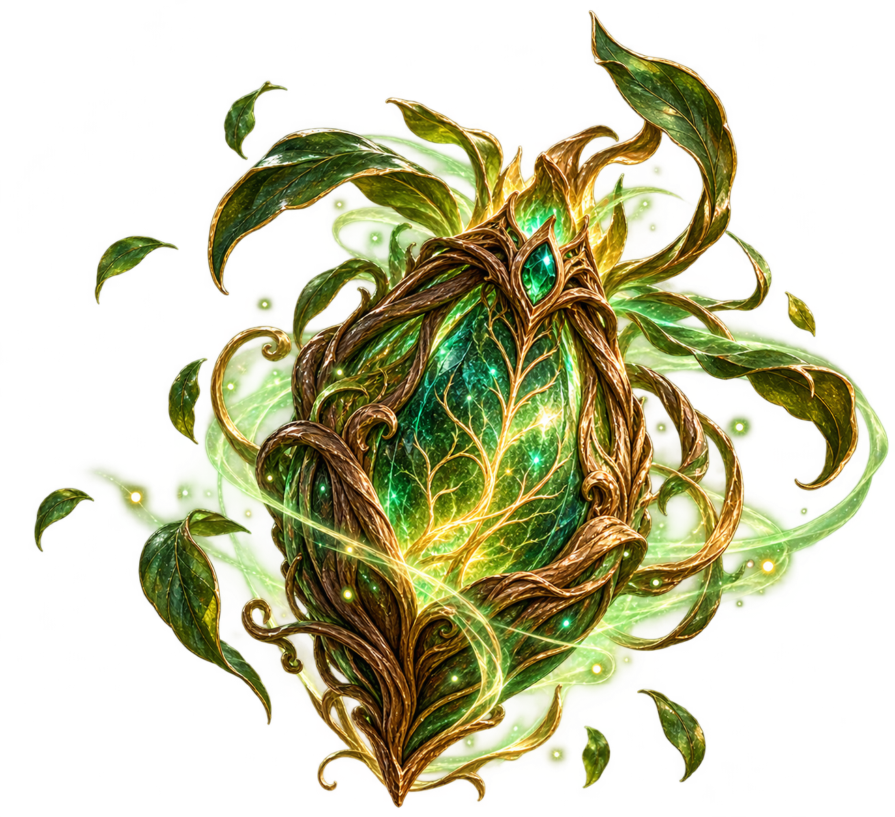

CHAPTER V – THE TRIAL OF EARTH
Gorgana's Realm
The Petrified Heart


Deep within the ancient forests lies the sacred kingdom once protected by Solumer.
For three thousand years, the Heartroot has nourished the land with ancient earth magic.
But now the roots are turning to stone, and the forest is slowly losing its life.
Gorgana, Guardian of Earth
"Welcome, young student. I am Gorgana, guardian of the ancient earth."
"The Heartroot is fading. Without its magic, even the oldest forests will fall silent."
"Will you help me awaken the life that sleeps beneath the stone?"
The Silent Forest
You follow an ancient path deeper into the forest. The air grows still, and the songs of birds fade away.
Around you, enormous roots have turned to stone. Even the smallest flowers stand frozen in time.
Gorgana whispers: "The earth remembers every life it has nurtured. But the Heartroot has forgotten how to grow."
The Shattered Heartroot
Before you stands the ancient Heartroot, shattered into nine pieces of lifeless stone.
Restore the broken image to awaken the magic sleeping within its roots.

The Blessing of Earth
Gorgana raises her hand, and a small emerald seed emerges from the ancient roots.
"Accept the Seed of Eternity, guardian. Within it rests the memory of every forest that has ever lived."
